When we defined the absolute value of a real number, we said that 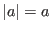
if  is greater than
or equal to 0 and
is greater than
or equal to 0 and
 if
is less than 0. Thus
if
is less than 0. Thus
 , for instance.
We will use the symbols
and
, for instance.
We will use the symbols
and  to stand for greater than and
less than, respectively. Thus 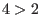
is true, but 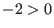
is a false statement. We also use the
symbol
to mean greater than or equal to and the symbol
for less than or equal to.
Statements involving these four symbols are called inequalities. A
linear inequality is a linear equation with one of the four inequality symbols used instead of
an equals sign.
to stand for greater than and
less than, respectively. Thus 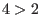
is true, but 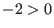
is a false statement. We also use the
symbol
to mean greater than or equal to and the symbol
for less than or equal to.
Statements involving these four symbols are called inequalities. A
linear inequality is a linear equation with one of the four inequality symbols used instead of
an equals sign.
Figure 1.13:
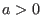
|
![\includegraphics[width=3.3cm,height=0.8cm]{li0.eps}](img408.gif) |
A linear inequality in one variable describes part of the line formed by the  -axis
on the graph of a plane. For example,
-axis
on the graph of a plane. For example,  would mean all the points to the right of 3 and the number 3 itself.
The inequality 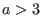
would look the same except that it would not contain 3.
Figure 1.13 is what we usually would draw for a one-variable linear inequality. We use a
at 0 on the line to indicate that
does not refer to zero. Figure 1.14 shows the
inequality 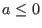
where
can equal zero.
would mean all the points to the right of 3 and the number 3 itself.
The inequality 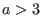
would look the same except that it would not contain 3.
Figure 1.13 is what we usually would draw for a one-variable linear inequality. We use a
at 0 on the line to indicate that
does not refer to zero. Figure 1.14 shows the
inequality 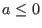
where
can equal zero.
Figure 1.14:
|
![\includegraphics[width=3.3cm,height=0.8cm]{li1.eps}](img412.gif) |
Figure 1.15 is an example of a linear inequality using the variable
as we
would normally draw it on the
-axis. Figure 1.16 uses the variable  in the inequality
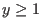
as it is drawn on the
-axis. We are free to draw on any line in whatever direction we choose
as long as we are careful to label our diagram properly. Usually, though, we stick to conventions and
use the
-axis to draw one-variable inequalities.
in the inequality
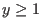
as it is drawn on the
-axis. We are free to draw on any line in whatever direction we choose
as long as we are careful to label our diagram properly. Usually, though, we stick to conventions and
use the
-axis to draw one-variable inequalities.
As with linear equations, we can have a system of linear inequalities. In one variable this sytem gives
a solution when the inequalities overlap. Figure 1.17 displays all the points that satisfies
the system of inequalities given by 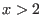
and 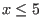
. It is easy to see that 3 satisfies this system but
that -1 or
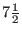
would not.
Figure 1.17:
and
|
![\includegraphics[width=5.2cm,height=0.8cm]{li4.eps}](img416.gif) |
Figure 1.18:
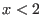
or 
|
![\includegraphics[width=6.2cm,height=0.8cm]{li5.eps}](img417.gif) |
When a system of inequalities does not have a solution, we say it is inconsistent. Figure 1.18
is an example of an inconsistent system of linear inequalities. We cannot have that
is less than 2 and
be greater than or equal to 5 at the same time.
We sketch one-variable systems of inequalities on a line. Two-variable systems are drawn on a plane where
each of the variables refers to an axis. The procedure to do this is quite simple. Suppose we had the
linear inequality 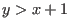
. First we would draw the line for the equality 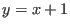
. Since
must
be greater than this line, all the pairs of
and
points which satisfy the inequality would lie
in the section of the plane above the line. A solution to a system of inequalities would be all the
points in a region of a plane which satisfy all the inequalities, if such an area exists. We will examine
one such system.
Figure 1.19:
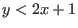
and 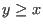
and 
|
![\includegraphics[width=6.2cm,height=9.2cm]{li6.eps}](img420.gif) |
Figure 1.19 gives us the solution to the system of inequalities
We might start to draw such a graph by first drawing the line  , which is parallel to
the
-axis and cuts the
-axis at 1. Our inequality is
so we draw this line with dashes
to indicate that points on this line are not to be included. Then we would shade the region of
the plane to the right of this line. This shaded area contains all pairs of points
, which is parallel to
the
-axis and cuts the
-axis at 1. Our inequality is
so we draw this line with dashes
to indicate that points on this line are not to be included. Then we would shade the region of
the plane to the right of this line. This shaded area contains all pairs of points  where
is greater than one. We next draw the
where
is greater than one. We next draw the  with a solid line because our inequality,
,
contains all the points on this line. We pick a point, say
with a solid line because our inequality,
,
contains all the points on this line. We pick a point, say  and 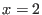
, which falls below
the line
.
For these coordinates 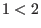
, so obviously this point does not satisfy the inequality
.
We then shade the region above the line
. Finally we draw a
dashed line for 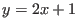
and shade the graph under this line (Why?). The area which is overlapped
by all of this shading is the portion of the plane with points
which satisfy all of the
inequalities.
and 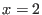
, which falls below
the line
.
For these coordinates 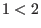
, so obviously this point does not satisfy the inequality
.
We then shade the region above the line
. Finally we draw a
dashed line for 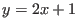
and shade the graph under this line (Why?). The area which is overlapped
by all of this shading is the portion of the plane with points
which satisfy all of the
inequalities.
Problems 1.7
- We can rewrite the inequality 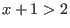
by adding -1 to both
sides of the inequality sign. We would have
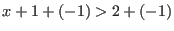
which would give us the same results
as
. We can add or subtract the same term to both sides of an inequality without affecting
it. The same can be said for multiplying each side of the inequality by a positive scalar.
Show that multiplying both sides of inequalities by a zero or a negative scalar does
affect the inequalities. How does it affect it?
- Multiplying both sides of an inequality by a negative number switches the direction of the'
inequality. Multiplying both sides of 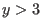
by -1 would give us
 . Multiplying both
sides of an inequality by 0 will either give us a trivial or wrong result. Multiplying both sides
by a positive scalar does not affect the inequality. Why, then, can we not multiply both sides
of an inequality by a variable?
. Multiplying both
sides of an inequality by 0 will either give us a trivial or wrong result. Multiplying both sides
by a positive scalar does not affect the inequality. Why, then, can we not multiply both sides
of an inequality by a variable?
- The absolute value of a variable in an inequality, 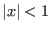
, for instance, actually gives rise
to a system of two inequalities, 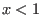
and
 . What would be the two inequalities
generated by 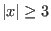
? What would be the two inequalities generated by
. What would be the two inequalities
generated by 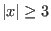
? What would be the two inequalities generated by  ? What about
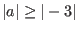
?
? What about
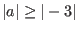
?
Exercises 1.7
- Graph the following inequalities (HINT: Use Lamp to
graph the equalities, redraw these on paper and shade the correct regions.)
-
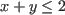
-

-
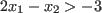
-
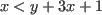
- Graph the following systems of inequalities
-

-

-
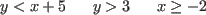
-
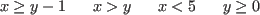
- Graph the following systems of inequalities
-

-

-
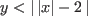
-